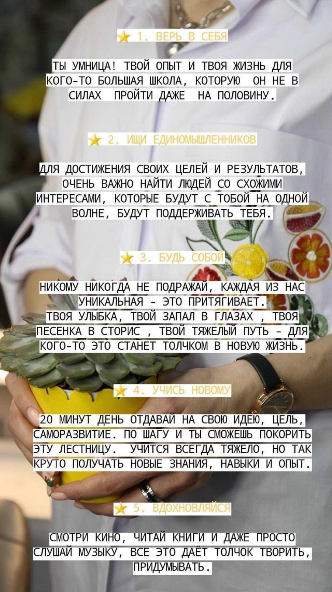

Информация об акциях и новом ассортименте.
Максимально ярко и лаконично сообщите о приближающейся акции, обозначьте её сроки и приглашайте
к вам. В том случае, если у вас ожидается расширение ассортимента, то оперативно сообщайте об
этом вашим подписчикам в сторис, отдельном посте и сообщением в direct. Если же какой-то товар
есть в единственном экземпляре или в ограниченном количестве, то об этом тоже нужно упомянуть:
создайте среди аудитории погоню за эксклюзивом.
Новости компании.
Можно сделать отчёт о том, сколько счастливых клиентов у вас пришло в предыдущем квартале,
сколько было открыто филиалов (например, у вас аккаунт кофейной точки «Кофе с собой»),
выкладывайте скриншоты или видео с отзывами.
Поздравительные сообщения.
Поздравляйте ваших подписчиков с праздничными датами не только в общедоступных публикациях,
но и с помощью личного обращения.
Как сделать рассылку в direct
Приветственное сообщение в Инстаграме — это первый мэсседж, который пользователь получает от
вас сразу же после подписки на аккаунт. В чём важность этого сообщения для вас? Во-первых,
вы таким образом показываете новому подписчику, что ему здесь рады и сразу же располагаете
к контакту с вами. Во-вторых, подписчик может узнать информацию об акциях, новинках, спец
предложениях ещё до того, как посмотрит ваши посты или сторис.
Рассмотрим один сервис для услуги «Автодирект».
Сервис называется Leadfeed, сервис платный, есть мобильная версия, стоимость за месяц рассылки
сообщений выходит от 450р-1500 рос. руб.Есть возможность рассылать сообщения не только своим
новым подписчикам, но и делать рассылку на новых подписчиков ваших конкурентов, а также тем,
с кем когда-либо вели переписку в директе.
Ниже приведу примеры мои личных рассылок, я всегда к тексту прикрепляю фото или видео о компании
или какие-то интересные плюшки.
Вариант №1
Привет, рада знакомству, лови мой чек лист, мотивация на новые победы 😍💌💥💣
Чем ты занимаешься и чем я могу тебе помочь?

Вариант №2
Здравствуйте, рады знакомству🤗🌿, наш бренд Mali, производит изделий из 100% льна, основная наши
размерная линейка 48-60, работаем не только на опт, но и на розницу.
Будут вопросы пишите👋 с радостью расскажем подробнее!